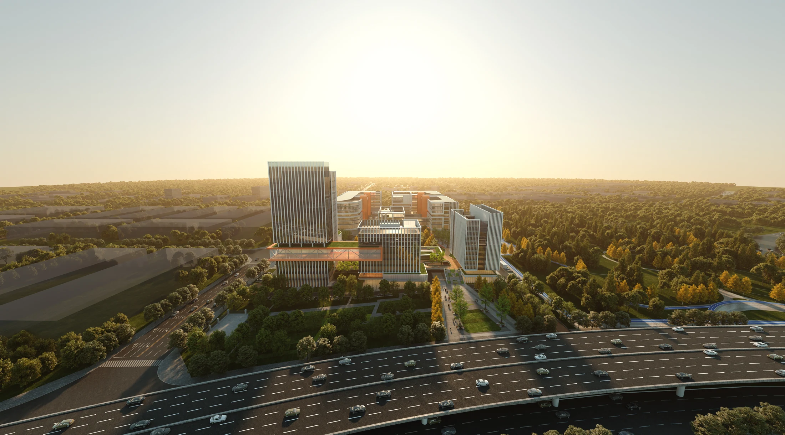

LUJIANG INDUSTRIAL PARK
庐江新能源汽车零部件产业园
在生产之外，组织一座园区
安徽 · 庐江
产业园 · 工业上楼 / 2025

- 地点
- 安徽 · 庐江
- 年份
- 2025
- 类型
- 产业园 · 工业上楼
- 阶段
- 汇报方案
- 参与
- 建筑方案与汇报表达 · 团队协作
- 设计团队
- 深圳市建筑设计研究总院有限公司合肥分院
PROJECT / 项目
以新能源汽车零部件产业为背景，将生产、研发与配套空间放在同一套园区逻辑中。关注工业上楼条件下的空间效率，也关注工作场景中的共享空间与园区形象。
01 / DESIGN生产空间立体组织
围绕多层生产厂房及货运平台，回应工业上楼对运输、空间使用和功能衔接的要求。
02 / DESIGN连接生产与配套
将配套用房与生产组团统筹布局，结合公共景观建立园区内部的联系。
03 / DESIGN从产业问题到图面表达
以产业研究、规划总图、空间分析和建筑表现，逐层展开方案的设计判断。